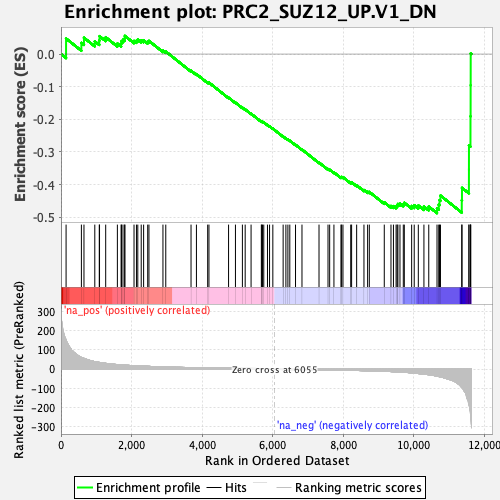
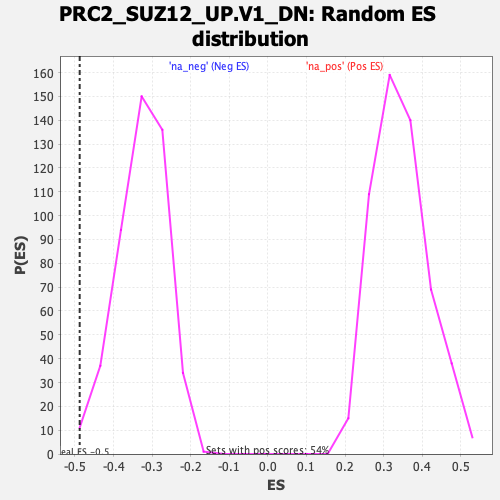

| | | Dataset | DE_genes |
| Phenotype | NoPhenotypeAvailable |
| Upregulated in class | na_neg |
| GeneSet | PRC2_SUZ12_UP.V1_DN |
| Enrichment Score (ES) | -0.48772714 |
| Normalized Enrichment Score (NES) | -1.4912397 |
| Nominal p-value | 0.008639309 |
| FDR q-value | 0.24280976 |
| FWER p-Value | 0.679 |
Table: GSEA Results Summary

Fig 1: Enrichment plot: PRC2_SUZ12_UP.V1_DN
Profile of the Running ES Score & Positions of GeneSet Members on the Rank Ordered List
| SYMBOL | RANK IN GENE LIST | RANK METRIC SCORE | RUNNING ES | CORE ENRICHMENT | | 1 | MEIS2 | 144 | 150.354 | 0.0476 | No |
| 2 | GUCY1B1 | 578 | 60.364 | 0.0342 | No |
| 3 | LPCAT1 | 651 | 55.247 | 0.0500 | No |
| 4 | MAPT | 958 | 38.376 | 0.0389 | No |
| 5 | KCNMB2 | 1085 | 34.319 | 0.0417 | No |
| 6 | KALRN | 1092 | 34.106 | 0.0548 | No |
| 7 | ST3GAL1 | 1267 | 29.626 | 0.0516 | No |
| 8 | LDB2 | 1598 | 23.200 | 0.0323 | No |
| 9 | OPCML | 1704 | 21.506 | 0.0318 | No |
| 10 | PGAP1 | 1714 | 21.325 | 0.0395 | No |
| 11 | DCSTAMP | 1757 | 20.762 | 0.0442 | No |
| 12 | KBTBD11 | 1806 | 20.047 | 0.0480 | No |
| 13 | KAT8 | 1810 | 19.997 | 0.0557 | No |
| 14 | SHPRH | 2070 | 17.303 | 0.0402 | No |
| 15 | AGO2 | 2139 | 16.582 | 0.0410 | No |
| 16 | HOXC5 | 2177 | 16.208 | 0.0442 | No |
| 17 | CLDN14 | 2274 | 15.380 | 0.0421 | No |
| 18 | SLC12A5 | 2342 | 14.862 | 0.0422 | No |
| 19 | DFFB | 2458 | 14.025 | 0.0379 | No |
| 20 | ROCK1 | 2493 | 13.713 | 0.0404 | No |
| 21 | LRRC61 | 2890 | 11.012 | 0.0105 | No |
| 22 | SRSF11 | 2970 | 10.525 | 0.0079 | No |
| 23 | TRAC | 3686 | 7.415 | -0.0510 | No |
| 24 | SRD5A2 | 3839 | 6.859 | -0.0615 | No |
| 25 | LHX6 | 4158 | 5.900 | -0.0866 | No |
| 26 | HOXA10 | 4194 | 5.798 | -0.0873 | No |
| 27 | BBC3 | 4750 | 4.388 | -0.1336 | No |
| 28 | FRMD8 | 4945 | 3.965 | -0.1488 | No |
| 29 | DRP2 | 5142 | 3.582 | -0.1643 | No |
| 30 | RPL37A | 5221 | 3.434 | -0.1697 | No |
| 31 | HYAL1 | 5388 | 3.158 | -0.1828 | No |
| 32 | CFAP70 | 5679 | 2.672 | -0.2069 | No |
| 33 | MARK1 | 5691 | 2.660 | -0.2068 | No |
| 34 | ACP5 | 5713 | 2.628 | -0.2075 | No |
| 35 | CHEK1 | 5748 | 2.576 | -0.2094 | No |
| 36 | ATP2A3 | 5853 | 2.444 | -0.2175 | No |
| 37 | PRKN | 5912 | 2.365 | -0.2215 | No |
| 38 | HAUS5 | 6005 | 2.257 | -0.2286 | No |
| 39 | CIB1 | 6297 | -2.564 | -0.2528 | No |
| 40 | AGER | 6375 | -2.681 | -0.2583 | No |
| 41 | MED20 | 6432 | -2.770 | -0.2621 | No |
| 42 | EPPK1 | 6486 | -2.842 | -0.2655 | No |
| 43 | PTGDS | 6648 | -3.139 | -0.2782 | No |
| 44 | CCNE1 | 6831 | -3.448 | -0.2926 | No |
| 45 | ACVRL1 | 7314 | -4.326 | -0.3326 | No |
| 46 | POLA2 | 7569 | -4.925 | -0.3526 | No |
| 47 | STEEP1 | 7616 | -5.037 | -0.3546 | No |
| 48 | MAP1LC3C | 7737 | -5.347 | -0.3628 | No |
| 49 | PYCR3 | 7936 | -5.926 | -0.3776 | No |
| 50 | FXYD1 | 7955 | -5.986 | -0.3768 | No |
| 51 | RAVER2 | 7993 | -6.095 | -0.3775 | No |
| 52 | CGA | 8213 | -6.858 | -0.3937 | No |
| 53 | PTPRO | 8238 | -6.931 | -0.3930 | No |
| 54 | CRYBG2 | 8381 | -7.406 | -0.4024 | No |
| 55 | ARHGEF16 | 8588 | -8.421 | -0.4168 | No |
| 56 | STAU2 | 8692 | -8.831 | -0.4222 | No |
| 57 | NDUFC1 | 8740 | -9.047 | -0.4227 | No |
| 58 | MAP2K4 | 9164 | -11.722 | -0.4546 | No |
| 59 | SUZ12 | 9354 | -13.063 | -0.4657 | No |
| 60 | KLF15 | 9424 | -13.636 | -0.4663 | No |
| 61 | ATG2A | 9499 | -14.229 | -0.4670 | No |
| 62 | SLC35D1 | 9529 | -14.422 | -0.4637 | No |
| 63 | BPNT1 | 9550 | -14.653 | -0.4596 | No |
| 64 | CD22 | 9609 | -15.249 | -0.4586 | No |
| 65 | NLGN1 | 9703 | -16.314 | -0.4601 | No |
| 66 | HOXD11 | 9732 | -16.710 | -0.4558 | No |
| 67 | GNGT2 | 9940 | -19.918 | -0.4658 | No |
| 68 | RFX2 | 10013 | -21.096 | -0.4636 | No |
| 69 | HS2ST1 | 10129 | -23.206 | -0.4643 | No |
| 70 | RITA1 | 10288 | -26.283 | -0.4675 | No |
| 71 | USP2 | 10425 | -29.245 | -0.4676 | No |
| 72 | TNNT2 | 10659 | -36.443 | -0.4732 | Yes |
| 73 | LMOD1 | 10708 | -38.739 | -0.4619 | Yes |
| 74 | PNPLA3 | 10730 | -39.761 | -0.4478 | Yes |
| 75 | SCHIP1 | 10757 | -40.711 | -0.4338 | Yes |
| 76 | AP1M2 | 11361 | -94.797 | -0.4481 | Yes |
| 77 | SLC7A6 | 11367 | -96.301 | -0.4101 | Yes |
| 78 | EFNA5 | 11564 | -183.416 | -0.3538 | Yes |
| 79 | STXBP2 | 11565 | -183.810 | -0.2804 | Yes |
| 80 | ANK1 | 11608 | -233.398 | -0.1908 | Yes |
| 81 | TSPAN12 | 11612 | -239.302 | -0.0955 | Yes |
| 82 | ARSD | 11614 | -244.256 | 0.0019 | Yes |
Table: GSEA details [plain text format]

Fig 2: PRC2_SUZ12_UP.V1_DN: Random ES distribution
Gene set null distribution of ES for PRC2_SUZ12_UP.V1_DN